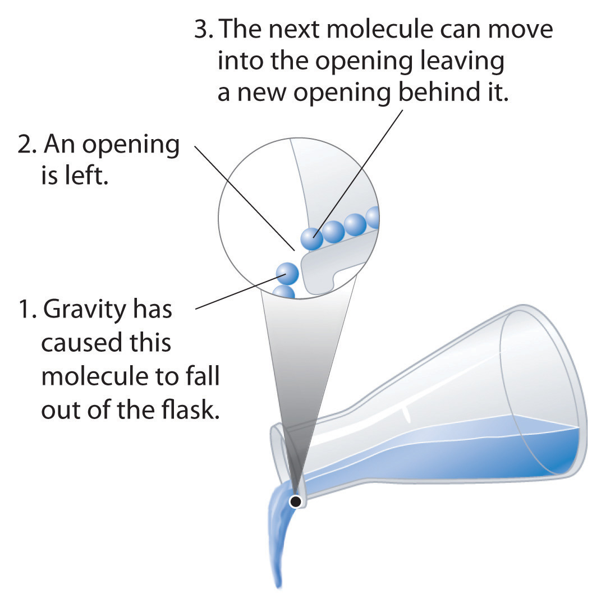

The kinetic molecular theory of gases described in Chapter 10 "Gases" gives a reasonably accurate description of the behavior of gases. A similar model can be applied to liquids, but it must take into account the nonzero volumes of particles and the presence of strong intermolecular attractive forces.
In a gas, the distance between molecules, whether monatomic or polyatomic, is very large compared with the size of the molecules; thus gases have a low density and are highly compressible. In contrast, the molecules in liquids are very close together, with essentially no empty space between them. As in gases, however, the molecules in liquids are in constant motion, and their kinetic energy (and hence their speed) depends on their temperature. We begin our discussion by examining some of the characteristic properties of liquids to see how each is consistent with a modified kinetic molecular description.
The molecules of a liquid are packed relatively close together. Consequently, liquids are much denser than gases. The density of a liquid is typically about the same as the density of the solid state of the substance. Densities of liquids are therefore more commonly measured in units of grams per cubic centimeter (g/cm3) or grams per milliliter (g/mL) than in grams per liter (g/L), the unit commonly used for gases.
Liquids exhibit short-range order because strong intermolecular attractive forces cause the molecules to pack together rather tightly. Because of their higher kinetic energy compared to the molecules in a solid, however, the molecules in a liquid move rapidly with respect to one another. Thus unlike the ions in the ionic solids discussed in Chapter 8 "Ionic versus Covalent Bonding", Section 8.2 "Ionic Bonding", the molecules in liquids are not arranged in a repeating three-dimensional array. Unlike the molecules in gases, however, the arrangement of the molecules in a liquid is not completely random.
Liquids have so little empty space between their component molecules that they cannot be readily compressed. Compression would force the atoms on adjacent molecules to occupy the same region of space.
The intermolecular forces in liquids are strong enough to keep them from expanding significantly when heated (typically only a few percent over a 100°C temperature range). Thus the volumes of liquids are somewhat fixed. Notice from Table 11.1 "The Density of Water at Various Temperatures" that the density of water, for example, changes by only about 3% over a 90-degree temperature range.
Table 11.1 The Density of Water at Various Temperatures
| T (°C) | Density (g/cm3) |
|---|---|
| 0 | 0.99984 |
| 30 | 0.99565 |
| 60 | 0.98320 |
| 90 | 0.96535 |
Molecules in liquids diffuse because they are in constant motion (Figure 11.1 "Molecular Diffusion in a Liquid"). A molecule in a liquid cannot move far before colliding with another molecule, however, so the mean free path in liquids is very short, and the rate of diffusion is much slower than in gases.
Figure 11.1 Molecular Diffusion in a Liquid

A drop of an aqueous solution containing a marker dye is added to a larger volume of water. As it diffuses, the color of the dye becomes fainter at the edges.
Liquids can flow, adjusting to the shape of their containers, because their molecules are free to move. This freedom of motion and their close spacing allow the molecules in a liquid to move rapidly into the openings left by other molecules, in turn generating more openings, and so forth (Figure 11.2 "Why Liquids Flow").
Figure 11.2 Why Liquids Flow
Molecules in a liquid are in constant motion. Consequently, when the flask is tilted, molecules move to the left and down due to the force of gravity, and the openings are occupied by other molecules. The result is a net flow of liquid out of the container.
The properties of liquids can be explained using a modified version of the kinetic molecular theory of gases described in Chapter 10 "Gases". This model explains the higher density, greater order, and lower compressibility of liquids versus gases; the thermal expansion of liquids; why they diffuse; and why they adopt the shape (but not the volume) of their containers.
A liquid, unlike a gas, is virtually incompressible. Explain what this means using macroscopic and microscopic descriptions. What general physical properties do liquids share with solids? What properties do liquids share with gases?
Using a kinetic molecular approach, discuss the differences and similarities between liquids and gases with regard to
How must the ideal gas law be altered to apply the kinetic molecular theory of gases to liquids? Explain.
Why are the root mean square speeds of molecules in liquids less than the root mean square speeds of molecules in gases?